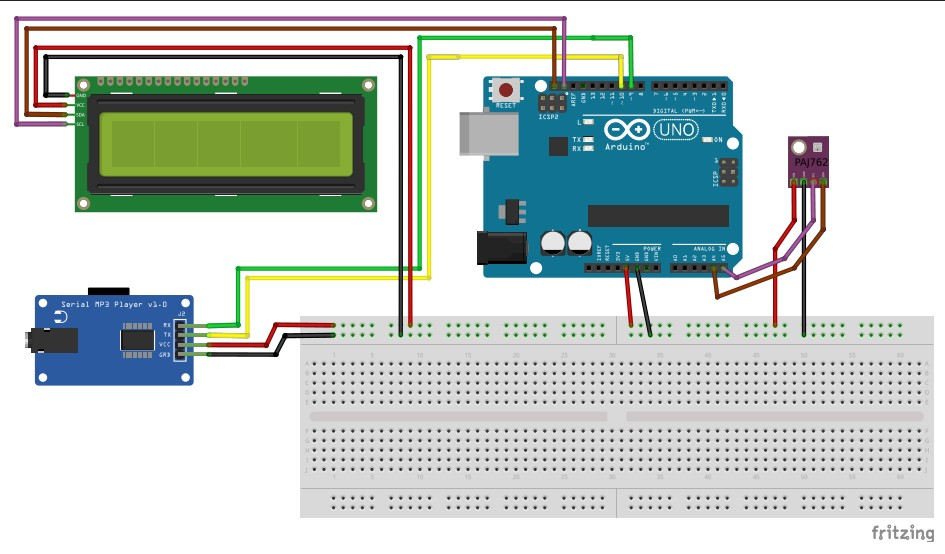
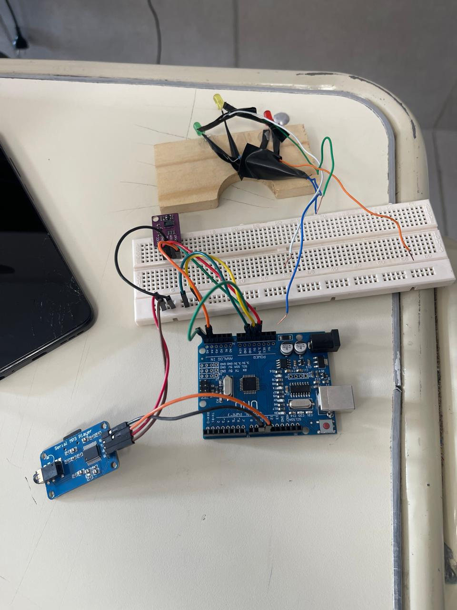
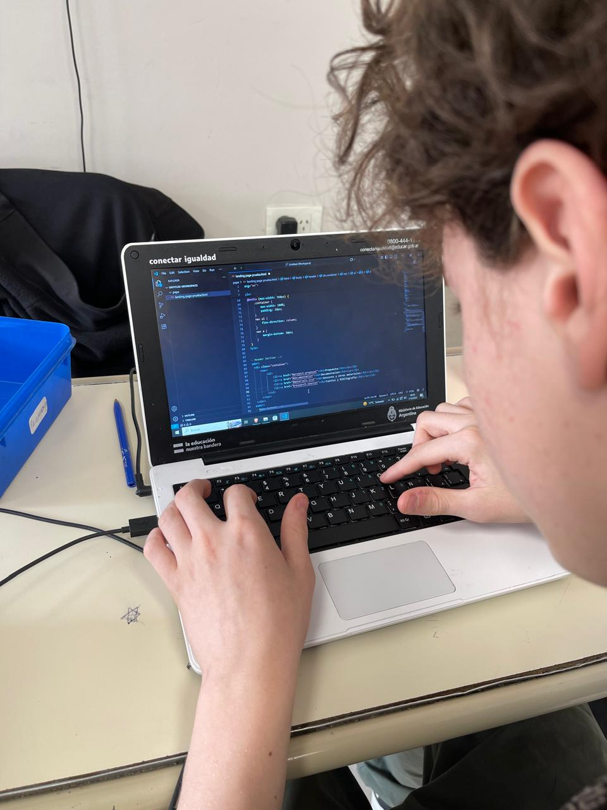
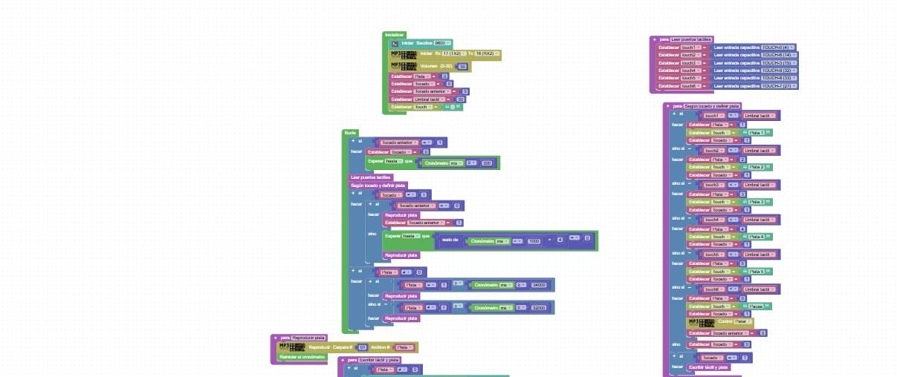
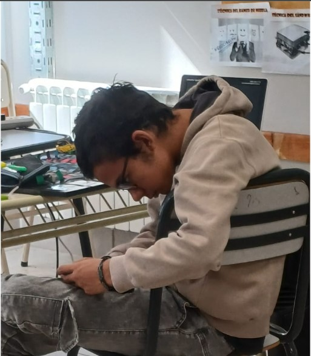

Nuestro Proceso

Prototipado
Utilizamos Tinkercad para diseñar el primer boceto del proyecto y lo que este incluiría (sensores, actuadores, protoboard, placa de desarrollo, etc)
Utilizamos Tinkercad para diseñar el primer boceto del proyecto y lo que este incluiría (sensores, actuadores, protoboard, placa de desarrollo, etc)

Armado
Una vez que el proyecto fue establecido, comenzamos a experimentar con los sensores en la placa Arduino UNO que fue nuestra primera placa de desarrollo, luego ampliamos el proyecto agregando una placa ESP32 que nos permitió hacer una interfase con patch de aluminio capacitivos
Una vez que el proyecto fue establecido, comenzamos a experimentar con los sensores en la placa Arduino UNO que fue nuestra primera placa de desarrollo, luego ampliamos el proyecto agregando una placa ESP32 que nos permitió hacer una interfase con patch de aluminio capacitivos

DiseñoWeb
La documentación del proyecto es una parte fundamental del mismo, esto llevo a que aplicáramos conocimientos vistos anteriormente para diseñar una landing page para difundir lo que estamos haciendo. En la misma, utilizamos lenguajes como HTML, CSS y JavaScript
La documentación del proyecto es una parte fundamental del mismo, esto llevo a que aplicáramos conocimientos vistos anteriormente para diseñar una landing page para difundir lo que estamos haciendo. En la misma, utilizamos lenguajes como HTML, CSS y JavaScript

Pragramación
Para realizar los programas que controlan el hardware del proyecto utilizamos un lenguaje de programación por bloques en la plataforma STEAMakers Blocks. Utilizar este lenguaje nos facilitó el desarrollo de la lógica y evitar los errores de escritura (sintaxis) que podríamos llegar a tener si lo hacíamos en C++
Para realizar los programas que controlan el hardware del proyecto utilizamos un lenguaje de programación por bloques en la plataforma STEAMakers Blocks. Utilizar este lenguaje nos facilitó el desarrollo de la lógica y evitar los errores de escritura (sintaxis) que podríamos llegar a tener si lo hacíamos en C++

Diseño
Una vez terminado los programas que controlarían el hardware del proyecto, nos dispusimos a crear el soporte en el cual iría montada la electrónica respetando la idea original del proyecto “Telares Sonoros”.
Una vez terminado los programas que controlarían el hardware del proyecto, nos dispusimos a crear el soporte en el cual iría montada la electrónica respetando la idea original del proyecto “Telares Sonoros”.

Primer Prototipo de Telar
Este es el primer prototipo de telar frecuencial que cumple con las primeras funciones que pensamos para que sea parte de la experiencia inmersiva del proyecto Telares Sonoros. Por lo que es la Versión 1.0
Este es el primer prototipo de telar frecuencial que cumple con las primeras funciones que pensamos para que sea parte de la experiencia inmersiva del proyecto Telares Sonoros. Por lo que es la Versión 1.0